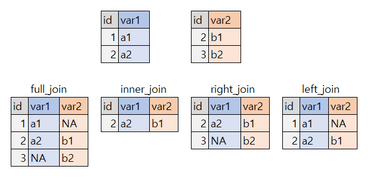

if(!require("tidyverse")) install.packages("tidyverse")
if(!require("htmlTable")) install.packages("htmlTable")
if(!require("haven")) install.packages("haven")
if(!require("DT")) install.packages("DT")4 Data Manipulation
4.1 dplyr (tidyverse)
데이터를 모으는 입장과 데이터를 분석하는 입장은 매우 다릅니다. 데이터를 모을 때는 모으는 연구자의 입장에서 하게되고, 이를 분석하는 연구자에 맞도록 변형하는 과정이 필요합니다. 또한 표를 만들거나 도표를 만드는 과정에서 데이터의 모양을 우리가 원하는 데로 변형할 필요가 있습니다. R에서 이과정을 쉽게 하기 위해 가장 많이 사용되는 것이 dplyr (tidyverse) 입니다. 이를 이용해서 실습해 보겠습니다
4.2 실습 데이터 준비
데이터 표를 만드는 실습은 6차 근로환경조사 자료를 통해 실습할 것입니다.. 자료는 안전보건공단, 근로환경조사 원시자료 사이트 (http://kosha.or.kr/kosha/data/primitiveData.do) 에서 신청할 수 있습니다.. 데이터를 불러오겠습니다. 안전보건공단 홈페이에서 자료를 다운 받는게 원칙입니다. 다만 실습을 빠르게 진행하기 위해서, dspubs.org 페이지에 있는 파일을 이용하겠습니다.
kwcsData6th.rds
자신의 folder에 data 라는 folder가 있는지 확인하십시오. data라는 폴더에 다운로드하고, 불러오도록 하겠습니다.
url <- "https://raw.githubusercontent.com/jinhaslab/opendata/main/kwcs/kwcsData6th.rds"
download.file(url, "data/tutorKWCS.rds")
kwcs = readRDS("data/tutorKWCS.rds")데이터 10개만 살펴보겠습니다. 이때 head()는 처음 10개, tail() 은 뒤에 10개, slice(5:15) 은 5번째부터 15번째 까지 입니다.
kwcs %>% head() %>% DT::datatable()
> 설문지와 변수설명 파일은 아래와 같습니다.
download.file("https://raw.githubusercontent.com/jinhaslab/opendata/main/kwcs/pdf3.pdf", "data/kwcs6thkorea.pdf")4.3 select
필요한 데이터를 종으로, columns 로 분할하는 것입니다. 즉 변수명으로 데이터를 분할하는 것입니다. 선택될 변수는 변수명과 변수번호(왼쪽 부터 1번)를 이용해서 할 수 있습니다.
처음부터 5번째 변수까지 선택해 보겠습니다 .
kwcs %>%
select(1:5)kwcs %>%
select(id, wt, area, hh_num, hm_01_gender) # A tibble: 6 × 5
id wt area hh_num hm_01_gender
<dbl> <dbl> <dbl+lbl> <dbl> <dbl+lbl>
1 2 0.137 3 [대구] 1 2 [여성]
2 3 0.350 3 [대구] 1 2 [여성]
3 6 0.156 7 [울산] 1 2 [여성]
4 8 0.228 7 [울산] 3 1 [남성]
5 9 0.168 7 [울산] 1 1 [남성]
6 10 0.675 6 [대전] 4 2 [여성] 변수명에 job이 들어 있는 경우 선택해 보겠습니다.
kwcs %>% select(contains("job")) %>% head()# A tibble: 6 × 12
job1 job2 job3 job3_…¹ comp_s…² job_c1 job_c1…³ job_c…⁴ job_c…⁵ job_c2
<dbl+lb> <dbl> <dbl> <chr> <dbl+lb> <dbl+> <dbl+lb> <dbl+l> <dbl+l> <dbl+lb>
1 1 [1개] NA NA "" 2 [대… 60 NA … NA NA 1 [그…
2 1 [1개] NA NA "" NA … 70 NA … NA NA NA …
3 1 [1개] NA NA "" 1 [대… 70 NA … NA NA NA …
4 1 [1개] NA NA "" NA … 65 NA … NA NA NA …
5 1 [1개] NA NA "" 3 [대… NA 1 [가… NA NA 1 [그…
6 1 [1개] NA NA "" 2 [대… NA 1 [가… NA NA NA …
# … with 2 more variables: job_c3 <dbl+lbl>, njob <chr>, and abbreviated
# variable names ¹job3_etc, ²comp_sjob, ³job_c1_666, ⁴job_c1_888, ⁵job_c1_999select안에서는 ” ” 안에 문자가 변수 명으로 인식됩니다. 이것은 매우 중요한 개념입니다. 아래의 두 코드는 같은 결과를 줍니다. 외부에서 문자를 입력 받았어도, 바로 적용할 수 있다는 의미 입니다.
kwcs %>% select("job1")# A tibble: 41,108 × 1
job1
<dbl+lbl>
1 1 [1개]
2 1 [1개]
3 1 [1개]
4 1 [1개]
5 1 [1개]
6 1 [1개]
7 1 [1개]
8 1 [1개]
9 1 [1개]
10 1 [1개]
# … with 41,098 more rowskwcs %>% select(job1)# A tibble: 41,108 × 1
job1
<dbl+lbl>
1 1 [1개]
2 1 [1개]
3 1 [1개]
4 1 [1개]
5 1 [1개]
6 1 [1개]
7 1 [1개]
8 1 [1개]
9 1 [1개]
10 1 [1개]
# … with 41,098 more rows제외하는 방법은 -를 사용합니다.
test <- kwcs %>%
select(id, wt, area) %>%
head() test# A tibble: 6 × 3
id wt area
<dbl> <dbl> <dbl+lbl>
1 2 0.137 3 [대구]
2 3 0.350 3 [대구]
3 6 0.156 7 [울산]
4 8 0.228 7 [울산]
5 9 0.168 7 [울산]
6 10 0.675 6 [대전] test라는 데이터셑을 만들었습니다. id, wt, area라는 변수를 갖은 데이터 입니다. 여기서 id라는 변수를 제외하겠습니다.
test %>% select(-1)# A tibble: 6 × 2
wt area
<dbl> <dbl+lbl>
1 0.137 3 [대구]
2 0.350 3 [대구]
3 0.156 7 [울산]
4 0.228 7 [울산]
5 0.168 7 [울산]
6 0.675 6 [대전] test %>% select(-id)# A tibble: 6 × 2
wt area
<dbl> <dbl+lbl>
1 0.137 3 [대구]
2 0.350 3 [대구]
3 0.156 7 [울산]
4 0.228 7 [울산]
5 0.168 7 [울산]
6 0.675 6 [대전] 4.4 filter
filter 는 특정 조건에 해당하는 행(row)를 선택합니다. 예를 들어 성별 중 남성만, 여성만 선택한 다는가 특정 연령 범위를 선택합니다. 이때 몇몇 조건문을 사용합니다. ==은 같다는 뜻입니다. 아래와 같이 활용합니다.
kwcs %>%
select(TSEX, AGE) %>%
filter(AGE ==55) %>%
head()# A tibble: 6 × 2
TSEX AGE
<dbl+lbl> <dbl>
1 2 [여성] 55
2 2 [여성] 55
3 2 [여성] 55
4 1 [남성] 55
5 1 [남성] 55
6 1 [남성] 55&는 and |는 or 을 의미합니다. 성별과 연령을 동시에 조건을 주도록 하겠습니다.
kwcs %>%
select(TSEX, AGE) %>%
filter(TSEX ==1 & AGE <17) # or == |# A tibble: 0 × 2
# … with 2 variables: TSEX <dbl+lbl>, AGE <dbl>!는 아니라는 표시입니다. 이것을 통해서 간단하게 여러 조건을 생략시킬 수 있습니다.
kwcs %>%
select(TSEX, AGE) %>%
filter(TSEX !=1) %>%
filter(AGE >=16 & AGE <18)# A tibble: 0 × 2
# … with 2 variables: TSEX <dbl+lbl>, AGE <dbl>%in%를 사용하면 여러 조건을 나열하는 방법으로 선택할 수 있습니다. 명목변수 등에 사용하기 편합니다.
kwcs %>%
select(TSEX, AGE) %>%
filter(TSEX %in% c(1, 2)) %>% # %in% allow multiple filtering
filter(!AGE >16) # ! means negative condition# A tibble: 0 × 2
# … with 2 variables: TSEX <dbl+lbl>, AGE <dbl>4.5 arrange
arrange는 순차 정렬하는 함수입니다. 정방향, 역방향이 가능합니다.
kwcs %>%
select(AGE) %>%
arrange(AGE) %>%
head()# A tibble: 6 × 1
AGE
<dbl>
1 19
2 19
3 19
4 19
5 19
6 19kwcs %>%
select(AGE) %>%
arrange(desc(AGE)) %>%
head()# A tibble: 6 × 1
AGE
<dbl>
1 69
2 69
3 69
4 69
5 69
6 694.6 mutate
mutate는 변수를 변형하는 가장 기본이면서 자주 사용되는 함수 입니다. 반드시 익숙해여쟈 하는 함수 입니다. mutate 단독으로 쓰이기 보다는 여러 조건문인 ifelse, case_when, recode를 이용합니다. 될수 있으면 ifelse보다는 case_when을 이용하는 것이 향후 SQL 등을 사용할 때 더 편할 수 있어 추천합니다.
남녀가 현재는 1인 남자, 2가 여자 입니다. 이를 male, female로 바꾸겠습니다.
kwcs %>%
select(TSEX, AGE) %>%
mutate(sexgp = case_when(
TSEX==1 ~ 'male',
TSEX==2 ~ 'female'
)) %>%
head()# A tibble: 6 × 3
TSEX AGE sexgp
<dbl+lbl> <dbl> <chr>
1 2 [여성] 54 female
2 2 [여성] 64 female
3 2 [여성] 65 female
4 2 [여성] 57 female
5 1 [남성] 38 male
6 2 [여성] 47 female이번에는 연령을 5세 단위로 바꾸어 보겠습니다. 그리고 test1이라는 데이터로 변형시켜보겠습니다.
test1 = kwcs %>%
select(TSEX, AGE) %>%
mutate(sexgp = case_when(
TSEX==1 ~ 'male',
TSEX==2 ~ 'female'
)) %>%
mutate(agegp = case_when(
AGE <25 ~ "<25",
AGE <30 ~ "<30",
AGE <35 ~ "<35",
AGE <40 ~ "<40",
AGE <45 ~ "<45",
AGE <50 ~ "<50",
AGE <55 ~ "<55",
AGE <60 ~ "<60",
TRUE ~ "\u226560" # 나머지는 모두 >65 (\u2265는 크거나 같다는 symbol)
)) %>%
slice(1:10)test1에는 sexgp가 female , male 이라고 되어 있네요, 이때 female을 Female로 대문자 변화, male을 Male로 대문자 변환해 보겠습니다. recode를 사용하겠습니다.
test1 # A tibble: 10 × 4
TSEX AGE sexgp agegp
<dbl+lbl> <dbl> <chr> <chr>
1 2 [여성] 54 female <55
2 2 [여성] 64 female ≥60
3 2 [여성] 65 female ≥60
4 2 [여성] 57 female <60
5 1 [남성] 38 male <40
6 2 [여성] 47 female <50
7 2 [여성] 54 female <55
8 2 [여성] 35 female <40
9 2 [여성] 68 female ≥60
10 2 [여성] 69 female ≥60 만연 female, male 두개뿐이라면 이 방법이 쉬울 수 있습니다. case_when과 female, male을 적절히 사용하면 되겠습니다.
test1 %>%
mutate(Sexgp = recode(sexgp,
"female" = "Female",
"male" = "Male"))# A tibble: 10 × 5
TSEX AGE sexgp agegp Sexgp
<dbl+lbl> <dbl> <chr> <chr> <chr>
1 2 [여성] 54 female <55 Female
2 2 [여성] 64 female ≥60 Female
3 2 [여성] 65 female ≥60 Female
4 2 [여성] 57 female <60 Female
5 1 [남성] 38 male <40 Male
6 2 [여성] 47 female <50 Female
7 2 [여성] 54 female <55 Female
8 2 [여성] 35 female <40 Female
9 2 [여성] 68 female ≥60 Female
10 2 [여성] 69 female ≥60 Female60세 미만을 young, 60세 이상을 old로 구분하여 young female, old female, young male, old male로 바꾸어 보겠습니다. case_when에는 처음에 사용한 것을 제외하고 나머지에서라는 뜻이 포함되어 있지요. 즉 ifelse 가 이미 숨어있습니다.
test1 %>%
mutate(intgp = case_when(
AGE <60 & TSEX == 1 ~ "young male",
AGE <60 & TSEX == 2 ~ "young female",
TSEX == 1 ~ "old male",
TSEX == 2 ~ "old female"
))# A tibble: 10 × 5
TSEX AGE sexgp agegp intgp
<dbl+lbl> <dbl> <chr> <chr> <chr>
1 2 [여성] 54 female <55 young female
2 2 [여성] 64 female ≥60 old female
3 2 [여성] 65 female ≥60 old female
4 2 [여성] 57 female <60 young female
5 1 [남성] 38 male <40 young male
6 2 [여성] 47 female <50 young female
7 2 [여성] 54 female <55 young female
8 2 [여성] 35 female <40 young female
9 2 [여성] 68 female ≥60 old female
10 2 [여성] 69 female ≥60 old female 4.7 group_by
group_by는 데이터 탐색에서 가장 많이 사용되면, 연속변수는 summrise와 명목변수는 count와 같이 사용됩니다. group_by에 의해 변수값에 따라 정리가 되게 됩니다. 새로운 변수은 heal_prob1를 사용해 보겠습니다. heal_prob1는 요통여 부이고, 요통이 있으면 1, 없으면 2로 되어 있습니다. 결측값, 무응답이 많으니 heal_prob1 에 무응답이 있는 경우 제외하겠습니다. NA 결측값은 is.na(변수)로 찾을 수 있습니다. 우선 count로 해보겠습니다 .
kwcs %>%
count(heal_prob1)# A tibble: 3 × 2
heal_prob1 n
<dbl+lbl> <int>
1 1 [있다] 11642
2 2 [없다] 29437
3 NA 29NA가 59개 있네요.
아래와 같이 sexgp별로 요통을 호소하는 사람이 얼마나 있는지 확인해 보겠습니다.
kwcs %>%
filter(!is.na(heal_prob1)) %>% # is.na() 즉 NA이면에서 !는 NA가 아니면이라는 뜻
select(TSEX, AGE, heal_prob1) %>%
mutate(sexgp=case_when(
TSEX==1 ~ "Men",
TRUE ~ "Female"
)) %>%
group_by(sexgp) %>%
count(heal_prob1) # A tibble: 4 × 3
# Groups: sexgp [2]
sexgp heal_prob1 n
<chr> <dbl+lbl> <int>
1 Female 1 [있다] 6771
2 Female 2 [없다] 15104
3 Men 1 [있다] 4871
4 Men 2 [없다] 14333연령별로는 어떠한 비율인지 확인해 보겠습니다.
kwcs %>%
filter(!is.na(heal_prob1)) %>% # is.na() 즉 NA이면에서 !는 NA가 아니면이라는 뜻
select(TSEX, AGE, heal_prob1) %>%
mutate(sexgp=case_when(
TSEX==1 ~ "Men",
TRUE ~ "Female"
)) %>%
mutate(agegp = case_when(
AGE <25 ~ "<25",
AGE <30 ~ "<30",
AGE <35 ~ "<35",
AGE <40 ~ "<40",
AGE <45 ~ "<45",
AGE <50 ~ "<50",
AGE <55 ~ "<55",
AGE <60 ~ "<60",
TRUE ~ "\u226560" # 나머지는 모두 >65 (\u2265는 크거나 같다는 symbol)
)) %>%
group_by(agegp) %>%
count(heal_prob1)# A tibble: 18 × 3
# Groups: agegp [9]
agegp heal_prob1 n
<chr> <dbl+lbl> <int>
1 <25 1 [있다] 144
2 <25 2 [없다] 1263
3 <30 1 [있다] 397
4 <30 2 [없다] 2462
5 <35 1 [있다] 578
6 <35 2 [없다] 2954
7 <40 1 [있다] 891
8 <40 2 [없다] 3430
9 <45 1 [있다] 1103
10 <45 2 [없다] 3679
11 <50 1 [있다] 1427
12 <50 2 [없다] 3892
13 <55 1 [있다] 1718
14 <55 2 [없다] 4043
15 <60 1 [있다] 2046
16 <60 2 [없다] 3616
17 ≥60 1 [있다] 3338
18 ≥60 2 [없다] 4098한눈에 파악하기 어렵네요. 그럼 어떻게 하는 것이 좋을 까요, mutate를 통해 율을 구해보는 것이 좋겠습니다.
kwcs %>%
filter(!is.na(heal_prob1)) %>% # is.na() 즉 NA이면에서 !는 NA가 아니면이라는 뜻
select(TSEX, AGE, heal_prob1) %>%
mutate(sexgp=case_when(
TSEX==1 ~ "Men",
TRUE ~ "Female"
)) %>%
mutate(agegp = case_when(
AGE <25 ~ "<25",
AGE <30 ~ "<30",
AGE <35 ~ "<35",
AGE <40 ~ "<40",
AGE <45 ~ "<45",
AGE <50 ~ "<50",
AGE <55 ~ "<55",
AGE <60 ~ "<60",
TRUE ~ "\u226560" # 나머지는 모두 >65 (\u2265는 크거나 같다는 symbol)
)) %>%
group_by(agegp) %>%
count(heal_prob1) %>%
mutate(prob = n/sum(n)) %>% #proportion을 구함
filter(heal_prob1 == 1) # 요통이 있다고한 사람을 비율만 남김. # A tibble: 9 × 4
# Groups: agegp [9]
agegp heal_prob1 n prob
<chr> <dbl+lbl> <int> <dbl>
1 <25 1 [있다] 144 0.102
2 <30 1 [있다] 397 0.139
3 <35 1 [있다] 578 0.164
4 <40 1 [있다] 891 0.206
5 <45 1 [있다] 1103 0.231
6 <50 1 [있다] 1427 0.268
7 <55 1 [있다] 1718 0.298
8 <60 1 [있다] 2046 0.361
9 ≥60 1 [있다] 3338 0.449요통의 유병율이 연령이 증가할 수록 점차 증가하고 있네요, 남녀의 차이가 있을 까요? 남녀별 구분을 위해 group_by( )에 sexgp를 추가했습니다 .
smry1 = kwcs %>%
filter(!is.na(heal_prob1)) %>% # is.na() 즉 NA이면에서 !는 NA가 아니면이라는 뜻
select(TSEX, AGE, heal_prob1) %>%
mutate(sexgp=case_when(
TSEX==1 ~ "Men",
TRUE ~ "Female"
)) %>%
mutate(agegp = case_when(
AGE <25 ~ "<25",
AGE <30 ~ "<30",
AGE <35 ~ "<35",
AGE <40 ~ "<40",
AGE <45 ~ "<45",
AGE <50 ~ "<50",
AGE <55 ~ "<55",
AGE <60 ~ "<60",
TRUE ~ "\u226560" # 나머지는 모두 >65 (\u2265는 크거나 같다는 symbol)
)) %>%
group_by(sexgp, agegp) %>% # 성별, 연령별
count(heal_prob1) %>%
mutate(prob = n/sum(n)) %>% #proportion을 구함
filter(heal_prob1 == 1) # 요통이 있다고한 사람을 비율만 남김.
smry1# A tibble: 18 × 5
# Groups: sexgp, agegp [18]
sexgp agegp heal_prob1 n prob
<chr> <chr> <dbl+lbl> <int> <dbl>
1 Female <25 1 [있다] 79 0.105
2 Female <30 1 [있다] 225 0.164
3 Female <35 1 [있다] 314 0.180
4 Female <40 1 [있다] 416 0.205
5 Female <45 1 [있다] 558 0.236
6 Female <50 1 [있다] 761 0.266
7 Female <55 1 [있다] 1041 0.309
8 Female <60 1 [있다] 1316 0.390
9 Female ≥60 1 [있다] 2061 0.515
10 Men <25 1 [있다] 65 0.0997
11 Men <30 1 [있다] 172 0.116
12 Men <35 1 [있다] 264 0.148
13 Men <40 1 [있다] 475 0.207
14 Men <45 1 [있다] 545 0.225
15 Men <50 1 [있다] 666 0.271
16 Men <55 1 [있다] 677 0.284
17 Men <60 1 [있다] 730 0.319
18 Men ≥60 1 [있다] 1277 0.372 summarise
summarise는 colum 별로 정리하여 나타낸는 함수 입니다. 이때 주로 같이 사용하는 함수는 mean, sd, median, max, min 등이며, quantile도 많이 사용됩니다.
kwcs %>%
summarise(mean_age = mean(AGE),
std_age = sd(AGE))# A tibble: 1 × 2
mean_age std_age
<dbl> <dbl>
1 47.0 12.4group_by와 함께 사용해 볼까요?
kwcs %>%
filter(!is.na(heal_prob1)) %>% # is.na() 즉 NA이면에서 !는 NA가 아니면이라는 뜻
select(TSEX, AGE, heal_prob1) %>%
mutate(sexgp=case_when(
TSEX==1 ~ "Men",
TRUE ~ "Female"
)) %>%
group_by(sexgp) %>%
summarise(mean_age = mean(AGE),
std_age = sd(AGE))# A tibble: 2 × 3
sexgp mean_age std_age
<chr> <dbl> <dbl>
1 Female 47.6 12.2
2 Men 46.3 12.5중요한 부분인 group_by를 한후에 group을 해제하기 위해서는 ungroup()을 해주어야 합니다. 향후 Table 만들기 등에서 활용되니 기역해 주세요.
4.8 merge, join
이번에는 두개의 테이블을 하나로 만들어 보겠습니다.
tab1 <- tibble(id = c(1, 2), var1 = c("a1", "a2"))
tab2 <- tibble(id = c(2, 3), var2 = c("b1", "b2"))tab1# A tibble: 2 × 2
id var1
<dbl> <chr>
1 1 a1
2 2 a2 tab2# A tibble: 2 × 2
id var2
<dbl> <chr>
1 2 b1
2 3 b2 이둘을 합쳐 보겠습니다. >full join
tab1 %>%
full_join(tab2, by=c("id"))# A tibble: 3 × 3
id var1 var2
<dbl> <chr> <chr>
1 1 a1 <NA>
2 2 a2 b1
3 3 <NA> b2 inner join
tab1 %>%
inner_join(tab2, by=c("id"))# A tibble: 1 × 3
id var1 var2
<dbl> <chr> <chr>
1 2 a2 b1 right join
tab1 %>%
right_join(tab2, by=c("id"))# A tibble: 2 × 3
id var1 var2
<dbl> <chr> <chr>
1 2 a2 b1
2 3 <NA> b2 left join
tab1 %>%
left_join(tab2, by=c("id"))# A tibble: 2 × 3
id var1 var2
<dbl> <chr> <chr>
1 1 a1 <NA>
2 2 a2 b1 어떻게 결과가 예상과 같았나요? 아래와 같이 정리할 수 있습니다.
